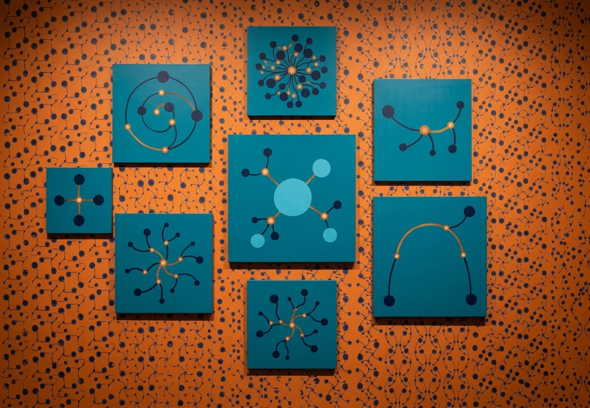

📄 README.md

Last manually updated: 2026-10-13
:book: About Me
- 🖥 AI/Data Engineer and physicist — production-oriented LLM systems, RAG, and agentic AI
- 💼 AI/Data Engineer at Arrive Logistics, working on analytics and data engineering
- 💜 Founder & lead of Plan A Labs, an open-source developer team
- 🎓 Master's in AI from Universidad de los Andes · 5 years of experience in data science and analytics
- 🧪 Background in Complex Network Science for system modeling, and in designing knowledge ontologies
- 🏫 Designer and instructor of university-level AI and data science courses
- 🎧 btw I also DJ — "DJ y coder"
⬆ What I'm up to
- 🔨 I'm currently...
- Building agentic AI systems and RAG pipelines (document intelligence: OCR + LLM extraction)
- Leading Plan A Labs, an open-source developer team
- Designing cloud-native and local-first workflows combining ETL, LLM data extraction, agents and RAG with enterprise data platforms (Oracle, Azure, AWS, Power BI)
- 🌱 I'm currently learning...
- Agentic AI patterns and Model Context Protocol (MCP) in depth
- 👯 I'm looking to collaborate on...
- RAG / document intelligence tooling, agentic systems, MCP servers
- 💬 Ask me about...
- LLM applications, RAG, agents, MCP, data pipelines, Complex Networks
- 😄 Pronouns: he/him
🛠️ Tech Stack
Languages: Python · SQL · DAX
LLM & Agent Stack:
ML Frameworks:
Data & Infrastructure:
🔔 My Latest GitHub Metrics
🔔 My Latest GitHub Activity
📫 How to reach me
You can reach me at the email in my GitHub profile, or on LinkedIn.


⚡ Credits / things used in this profile README
- Animated network header generated with Python (PIL/numpy/imageio)
- Visitor count from NathanChung/vercel-badge-reloaded
- GitHub activity feed via jamesgeorge007/github-activity-readme
- GitHub Metrics via lowlighter/metrics
- Tech badges via shields.io